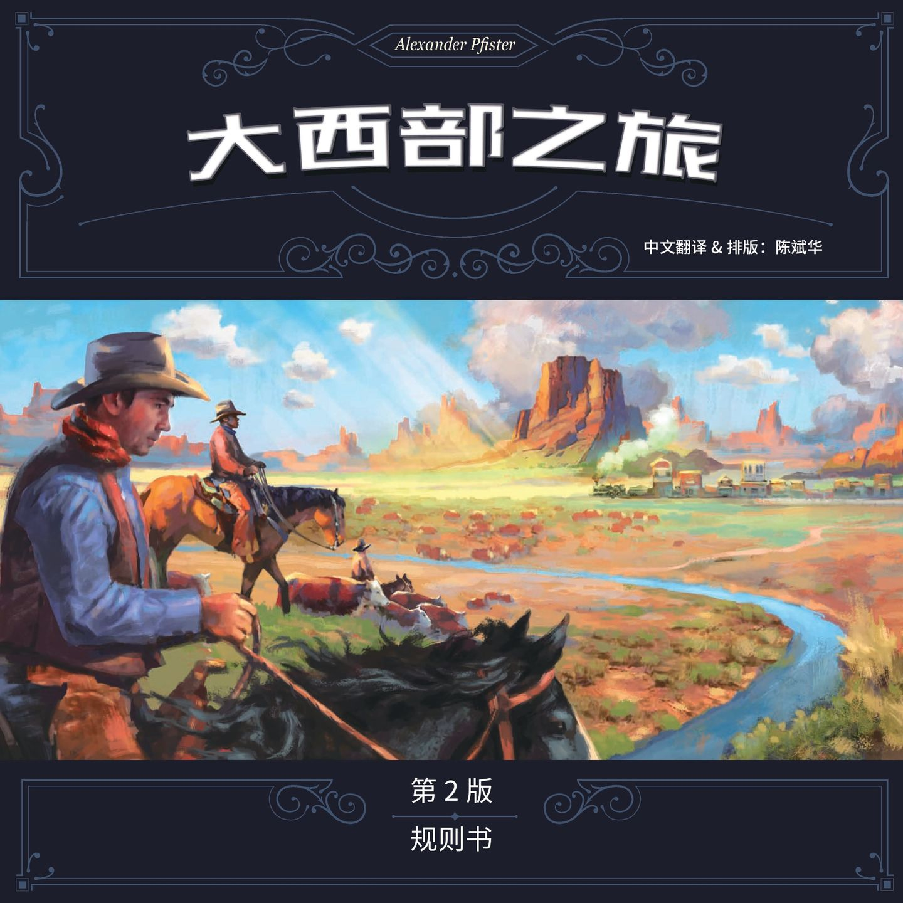
本页整理自《大西部之路》（Great Western Trail）2021 年第 2 版中文规则书（Alexander R. Pfister 设计，Plan B Games / Eggertspiele 出版，©2021，中文翻译&排版 陈斌华），共 20 页逐页转录，并在对应章节嵌入原书扫描页供对照。内容涵盖配件清单、版图与玩家设置、回合三阶段（移动牧民／地点行动／补手牌）、堪萨斯城五子阶段（预见×3／收入／运输）、牌库构筑、目标卡、私人建筑、辅助行动、雇佣工人、购买牛卡、火车与车站升级、游戏结束计分、西门塔尔牛变体、单人模式配件与注意事项。规则内容归版权方所有，转录仅供个人学习查阅。
整理说明：原书用词与排印照录——「车票」系指牛卡牌堆（牛卡），「彩虹票」类推不适用于本作；「彩虹」一词本作无。已照录的原书不一致与笔误包括：劫犯板块颜色（配件页"绿色/橙色"与正文"绿色或蓝色"并存；"洪水/洪涝"并存）、"布袋力"（径改为"布袋里"）、"每私人"（应为"每位玩家"）、"即使行动"（应为"即时行动"）、"牛牛卡"、"顽疾阿仔"、"克里奥洛/克里奥尔"混用、"交易指示物/交换指示物"混用等，均按原书位置保留或注明。「任务牌」在本作中称「目标卡」。
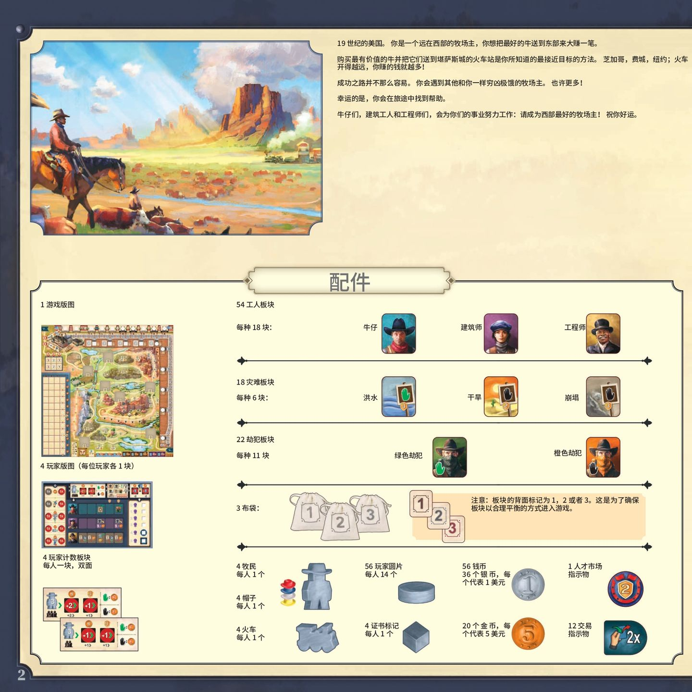
19 世纪的美国。你是一个远在西部的牧场主，你想把最好的牛送到东部来大赚一笔。
购买最有价值的牛并把它们送到堪萨斯城的火车站是你所知的最接近目标的方法。芝加哥，费城，纽约；火车开得越远，你赚的钱就越多！
成功之路并不那么容易。你会遇到其他和你一样穷凶极恶的牧场主。也许更多！
幸运的是，你会在旅程中找到帮助。
牛仔们，建筑工人和工程师们，会为你们的事业努力工作；请成为西部最好的牧场主！祝你好运。
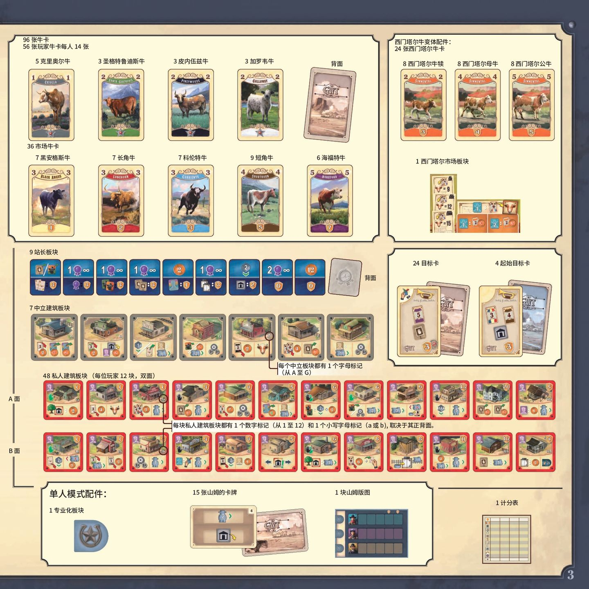
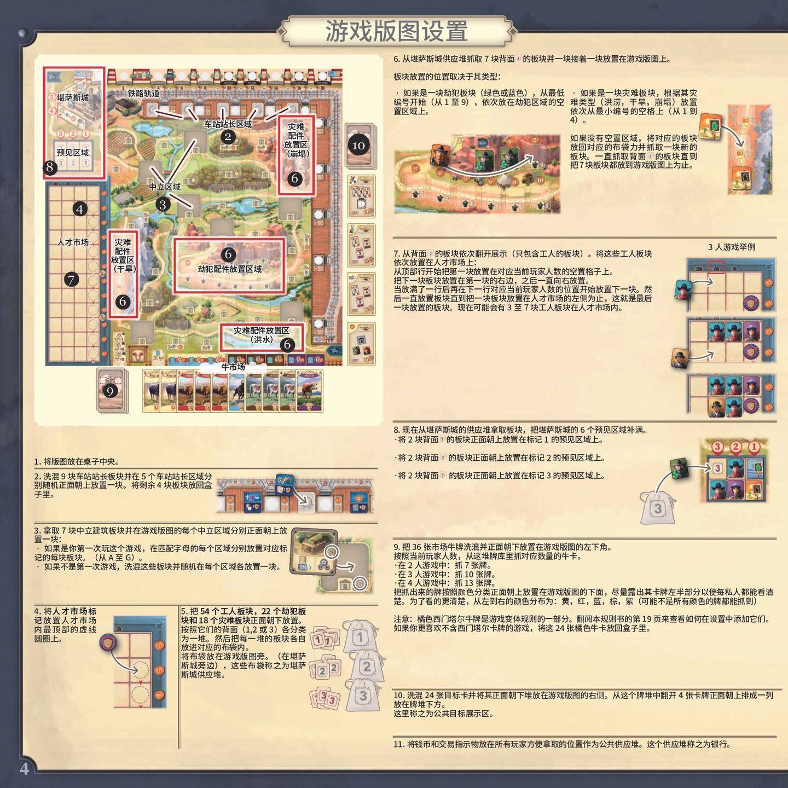
注意：橘色西门塔尔牛牌是游戏变体规则的一部分。翻阅本规则书的第 19 页来查看如何在设置中添加它们。如果你更喜欢不含西门塔尔卡牌的游戏，将这 24 张橘色牛卡放回盒子里。
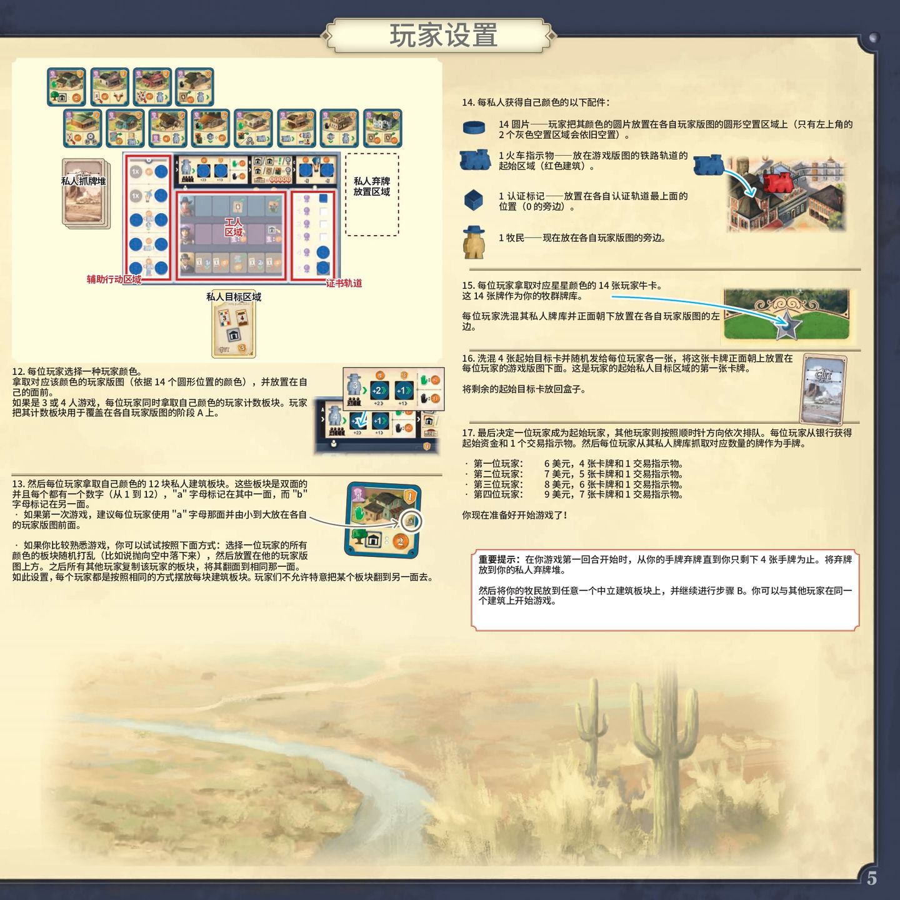
重要提示：在你游戏第一回合开始时，从你的手牌弃牌直到你只剩下 4 张手牌为止。将弃牌放到你的私人弃牌堆。
然后将你的牧民放到任意一个中立建筑板块上，并继续进行步骤 B。你可以与其他玩家在同一个建筑上开始游戏。
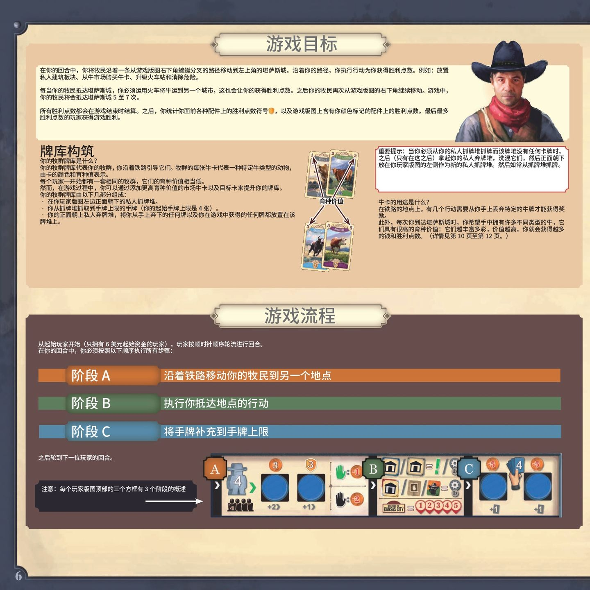
在你的回合中，你将牧民沿着一条从游戏版图右下角蜿蜒分叉的路径移动到左上角的堪萨斯城。沿着你的路径，你执行行动为你获得胜利点数。例如：放置私人建筑板块、从牛市场购买牛卡、升级火车站和消除危险。
每当你的牧民抵达堪萨斯城，你必须运用火车将牛运到另一个城市，这也会让你的获得胜利点数。之后你的牧民再次从游戏版图的右下角继续移动。游戏中，你的牧民将会抵达堪萨斯城 5 至 7 次。
所有胜利点数都会在游戏结束时结算。之后，你统计你面前各种配件上的胜利点数符号，以及游戏版图上含有你颜色标记的配件上的胜利点数。最后最多胜利点数的玩家获得游戏胜利。
你的牧群牌库是什么？
你的牧群牌库代表你的牧群，你沿着铁路引导它们。牧群的每张牛卡代表一种特定牛类型的动物，由卡的颜色和育种值表示。
每个玩家一开始都有一套相同的牧群：它们的育种价值相当低。
然而，在游戏过程中，你可以通过添加更高育种价值的市场牛卡以及目标卡来提升你的牌库。
你的牧群牌库由以下几部分组成：
更重要提示：当你必须从你的私人抓牌堆抓牌而该牌堆没有任何卡牌时，之后（只有在这之后）拿起你的私人弃牌堆，洗混它们，然后正面朝下放在你玩家版图的左侧作为新的私人抓牌堆。然后如常从抓牌堆抓牌。
牛卡的用途是什么？
在铁路的地点上，有几个行动需要从你手上丢弃特定的牛牌才能获得奖励。
此外，每次你到达堪萨斯城时，你希望手中拥有许多不同类型的牛，它们具有很高的育种价值：它们越丰富多彩，价值越高，你就会获得越多的钱和胜利点数。（详情见第 10 页至第 12 页。）
从起始玩家开始（只拥有 6 美元起始资金的玩家），玩家按顺时针顺序轮流进行回合。在你的回合中，你必须按照以下顺序执行所有步骤：
之后轮到下一位玩家的回合。注意：每个玩家版图顶部的三个方框有 3 个阶段的概述。
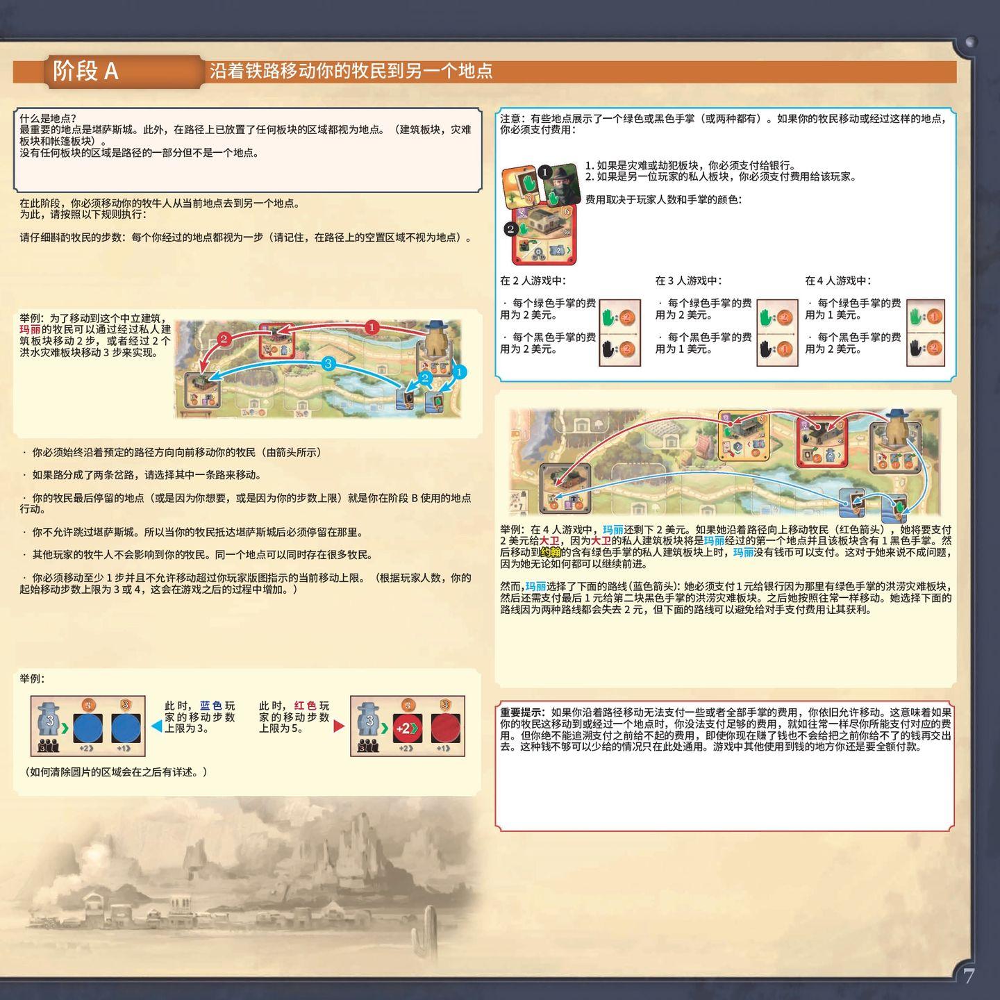
什么是地点？最重要的地点是堪萨斯城。此外，在路径上已放置了任何板块的区域都视为地点。（建筑板块，灾难板块，劫犯板块和帐篷板块）。没有任何板块的区域是路径的一部分但不是一个地点。
在此阶段，你必须移动你的牧牛人从当前地点去到另一个地点。为此，请按照以下规则执行：
请仔细斟酌牧民的步数：每个你经过的地点都视为一步（请记住，在路径上的空置区域不视为地点）。
举例：为了移动到这个中立建筑，玛丽的牧民可以通过经过私人建筑板块移动 2 步，或者经过 2 个洪水灾难板块移动 3 步来实现。
示例：蓝色玩家的移动步数上限为 3；红色玩家的移动步数上限为 5。（如何清除圆片的区域会在之后有详述。）
注意：有些地点展示了一个绿色或黑色手掌（或两种都有）。如果你的牧民移动或经过这样的地点，你必须支付费用：
费用取决于玩家人数和手掌的颜色：
| 玩家人数 | 每个绿色手掌 | 每个黑色手掌 |
|---|---|---|
| 2 人游戏 | 2 美元 | 2 美元 |
| 3 人游戏 | 2 美元 | 1 美元 |
| 4 人游戏 | 1 美元 | 2 美元 |
举例：在 4 人游戏中，玛丽还剩下 2 美元。如果她沿着路径向上移动牧民（红色箭头），她将要支付 2 美元给大卫，因为大卫的私人建筑板块将是玛丽经过的第一个地点并且该板块含有 1 黑色手掌。然后移动到约翰的含有绿色手掌的私人建筑板块上时，玛丽没有钱币可以支付。这对于她来说不成问题，因为她无论如何都可以继续前进。
然而，玛丽选择了下面的路线（蓝色箭头）：她必须支付 1 元给银行因为那里有绿色手掌的洪涝灾难板块，然后还需支付最后 1 元给第二块黑色手掌的洪涝灾难板块。之后她按照往常一样移动。她选择下面的路线因为两种路线都会失去 2 元，但下面的路线可以避免给对手支付费用让其获利。
重要提示：如果你沿着路径移动无法支付一些或者全部手掌的费用，你依旧允许移动。这意味着如果你的牧民这移动到或经过一个地点时〔"这"原书如此〕，你没法支付足够的费用，就如往常一样尽你所能支付对应的费用。但你绝不能追溯支付之前给不起的费用，即使你现在赚了钱也不会给把之前你给不了的钱再交出去。这种钱不够可以少给的情况只在此处通用。游戏中其他使用到钱的地方你还是要全额付款。
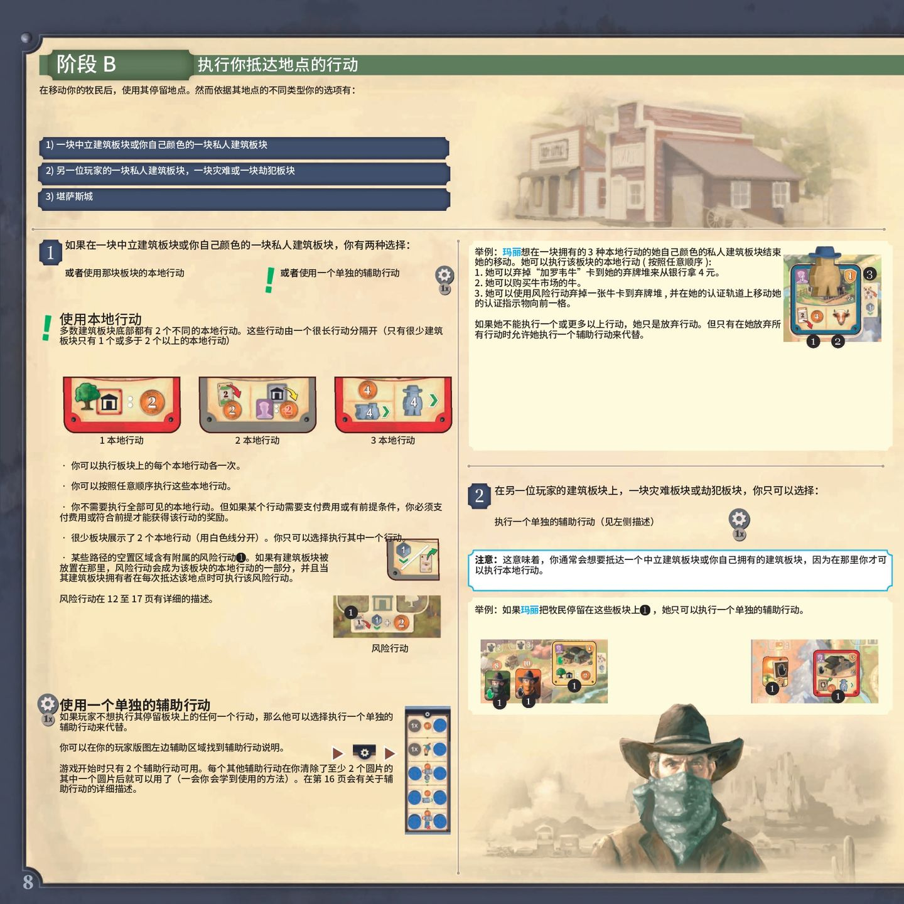
在移动你的牧民后，使用其停留地点。然而依据其地点的不同类型你的选项有：
1) 一块中立建筑板块或你自己颜色的一块私人建筑板块；2) 另一位玩家的一块私人建筑板块，一块灾难或一块劫犯板块；3) 堪萨斯城。
使用本地行动——多数建筑板块底部都有 2 个不同的本地行动。这些行动由一个很长行动分隔开（只有很少建筑板块只有 1 个或多于 2 个以上的本地行动）
使用一个单独的辅助行动 (1x)——如果玩家不想执行其停留板块上的任何一个行动，那么他可以选择执行一个单独的辅助行动来代替。你可以在你的玩家版图左边辅助区域找到辅助行动说明。游戏开始时只有 2 个辅助行动可用。每个其他辅助行动在你清除了至少 2 个圆片的其中一个圆片后就可以用了（一会你会学到使用的方法）。在第 16 页会有关于辅助行动的详细描述。
举例：玛丽想在一块拥有的 3 种本地行动的她自己颜色的私人建筑板块结束她的移动。她可以执行该板块的本地行动（按照任意顺序）：
如果她不能执行一个或更多以上行动，她只是放弃行动。但只有在她放弃所有行动时允许她执行一个辅助行动来代替。
在另一位玩家的建筑板块上，一块灾难板块或劫犯板块，你只可以选择：执行一个单独的辅助行动（见左侧描述）(1x)。
注意：这意味着，你通常会想要抵达一个中立建筑板块或你自己拥有的建筑板块，因为在那里你才可以执行本地行动。
举例：如果玛丽把牧民停留在这些板块上，她只可以执行一个单独的辅助行动。
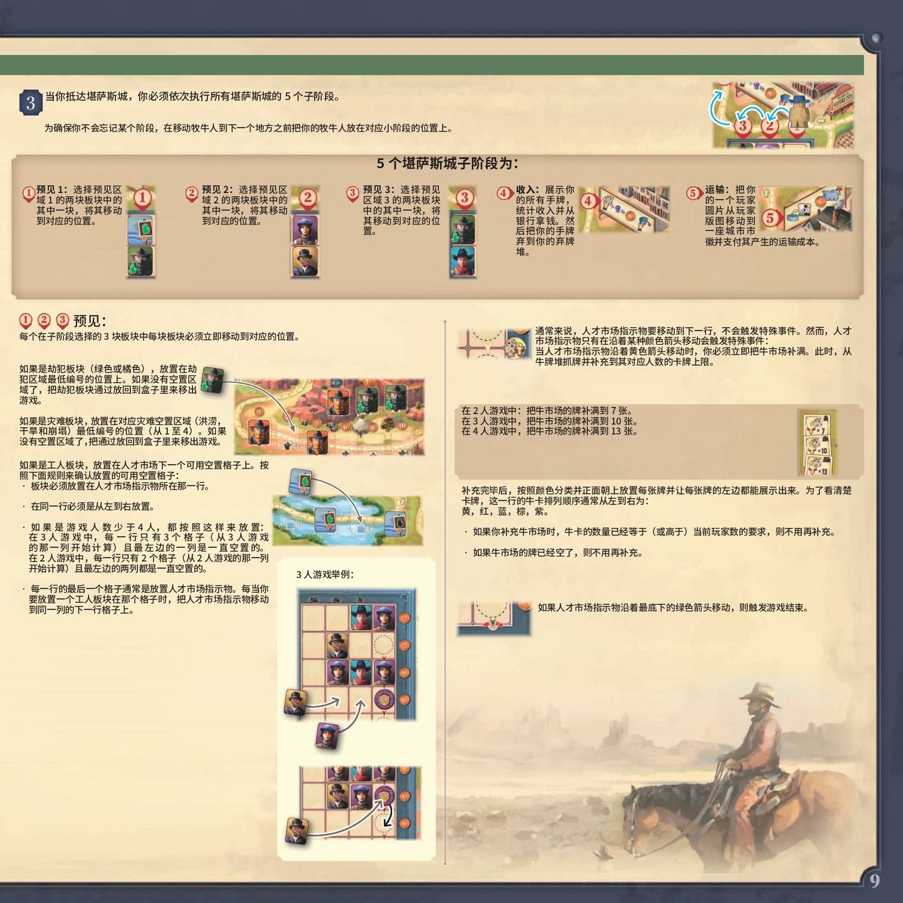
当你抵达堪萨斯城，你必须依次执行所有堪萨斯城的 5 个子阶段。为确保你不会忘记某个阶段，在移动牧牛人到下一个地方之前把你的牧牛人放在对应小阶段的位置上。
每个在子阶段选择的 3 块板块中每块板块必须立即移动到对应的位置。
通常来说，人才市场指示物要移动到下一行，不会触发特殊事件。然而，人才市场指示物只有在沿着某种颜色箭头移动会触发特殊事件：
当人才市场指示物沿着黄色箭头移动时，你必须立即把牛市场补满。此时，从牛牌堆抓牌并补充到其对应人数的卡牌上限。在 2 人游戏中：把牛市场的牌补满到 7 张；在 3 人游戏中，把牛市场的牌补满到 10 张；在 4 人游戏中，把牛市场的牌补满到 13 张。补充完毕后，按照颜色分类并正面朝上放置每张牌并让每张牌的左边都能展示出来。为了看清楚卡牌，这一行的牛卡排列顺序通常从左到右为：黄，红，蓝，棕，紫。
如果人才市场指示物沿着最底下的绿色箭头移动，则触发游戏结束。
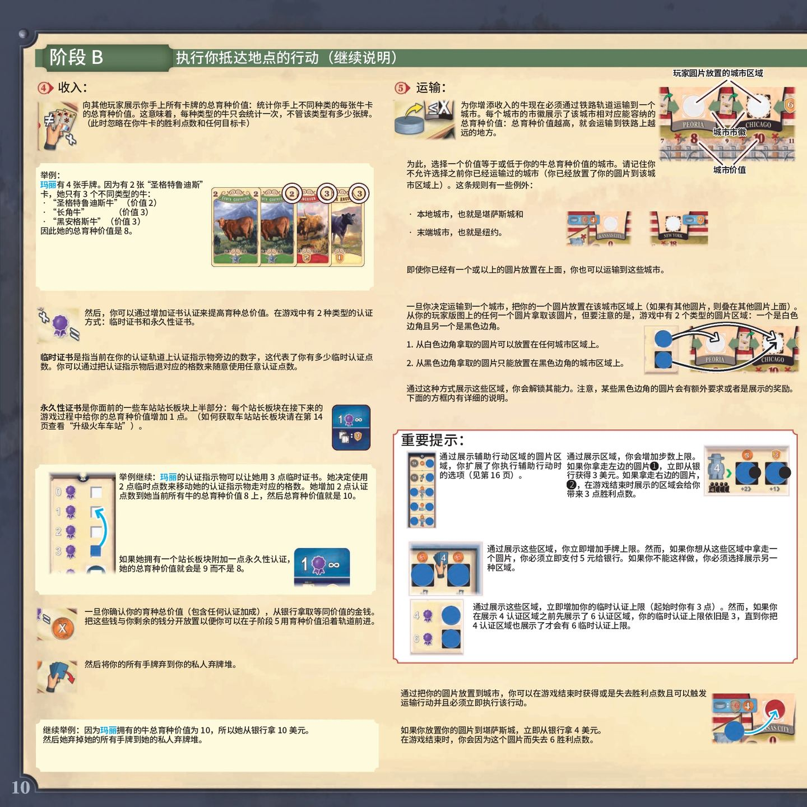
向其他玩家展示你手上所有卡牌的总育种价值：统计你手上不同种类的每张牛卡的总育种价值。这意味着，每种类型的牛只会统计一次，不管该类型有多少张牌。（此时忽略在你牛卡的胜利点数和任何目标卡）
举例：玛丽有 4 张手牌。因为有 2 张"圣格特鲁迪斯"卡，她只有 3 个不同类型的牛："圣格特鲁迪斯牛"（价值 2）、"长角牛"（价值 3）、"黑安格斯牛"（价值 3）。因此她的总育种价值是 8。
然后，你可以通过增加证书认证来提高育种总价值。在游戏中有 2 种类型的认证方式：临时证书和永久性证书。
临时证书是指当前在你的认证轨道上认证指示物旁边的数字，这代表了你有多少临时认证点数。你可以通过把认证指示物后退对应的格数来随意使用任意认证点数。
永久性证书是你面前的一些车站站长板块上半部分：每个站长板块在接下来的游戏过程中给你的总育种价值增加 1 点。（如何获取车站站长板块请在第 14 页查看"升级火车车站"）。
举例继续：玛丽的认证指示物可以让她用 3 点临时证书。她决定使用 2 点临时点数来移动她的认证指示物走对应的格数。她增加 2 点认证点数到她当前所有牛的总育种价值 8 上，然后总育种价值就是 10。如果她拥有一个站长板块附加一点永久性认证，她的总育种价值就会是 9 而不是 8。
一旦你确认你的育种总价值（包含任何认证加成），从银行拿取等同价值的金钱。把这些钱与你剩余的钱分开放置以便你可以在子阶段 5 用育种价值沿着轨道前进。然后将你的所有手牌弃到你的私人弃牌堆。
为你增添收入的牛现在必须通过铁路轨道运输到一个城市。每个城市的市徽展示了该城市相对应能容纳的总育种价值：总育种价值越高，就会运输到铁路上越远的地方。
为此，选择一个价值等于或低于你的牛总育种价值的城市。请记住你不允许选择之前你已经运输过的城市（你已经放置了你的圆片到该城市区域上）。这条规则有一些例外：
即使你已经有一个或以上的圆片放置在上面，你也可以运输到这些城市。
一旦你决定运输到一个城市，把你的一个圆片放置在该城市区域上（如果有其他圆片，则叠在其他圆片上面）。从你的玩家版图上的任何一个圆片拿取该圆片，但要注意的是，游戏中有 2 个类型的圆片区域：一个是白色边角且另一个是黑色边角。
通过这种方式展示这些区域，你会解锁其能力。注意，某些黑色边角的圆片会有额外要求或者是展示的奖励。下面的方框内有详细的说明。
重要提示：
通过把你的圆片放置到城市，你可以在游戏结束时获得或是失去胜利点数且可以触发运输行动并且必须立即执行该行动。
如果你放置你的圆片到堪萨斯城，立即从银行拿 4 美元。在游戏结束时，你会因为这个圆片而失去 6 胜利点数。
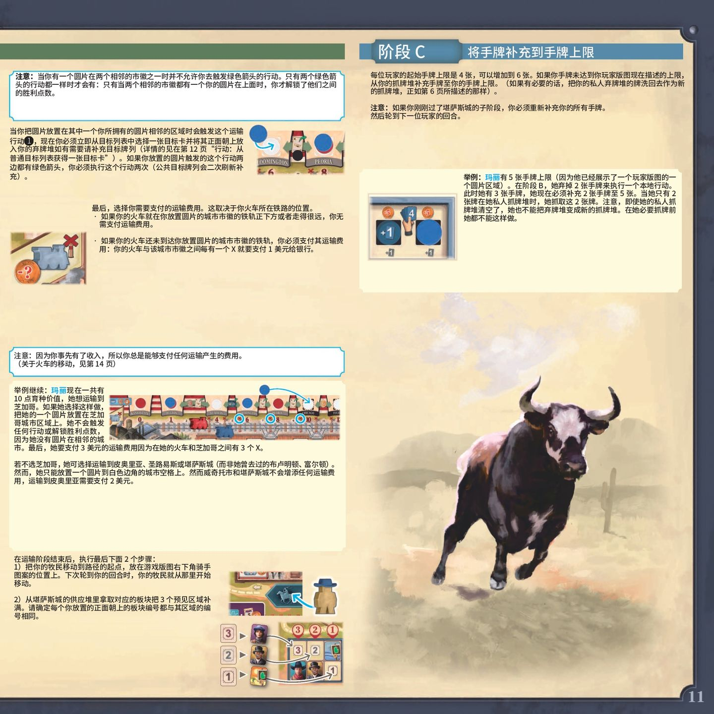
注意：当你有一个圆片在两个相邻的市徽之一时并不允许你去触发绿色箭头的行动。只有两个绿色箭头的行动都一样时才会有：只有当两个相邻的市徽都有一个你的圆片在上面时，你才解锁了他们之间的胜利点数。
当你把圆片放置在其中一个你所拥有的圆片相邻的区域时会触发这个运输行动，现在你必须立即从目标列表中选择一张目标卡并将其正面朝上放入你的弃牌堆如有需要请补充目标牌列（详情的见在第 12 页"行动：从普通目标列表获得一张目标卡"）。如果你放置的圆片触发的这个行动两边都有绿色箭头，你必须执行这个行动两次（公共目标牌列会二次刷新补充）。
最后，选择你需要支付的运输费用。这取决于你火车所在铁路的位置。
注意：因为你要先有了收入，所以你总是能够支付任何运输产生的费用。（关于火车的移动，见第 14 页）
举例继续：玛丽现在一共有 10 点育种价值，她想运输到芝加哥。如果她选择这样做，把她的一个圆片放置在芝加哥城市区域上。她不会触发任何行动或解锁胜利点数，因为她没有圆片在相邻的城市。最后，她要支付 3 美元的运输费用因为在她的火车和芝加哥之间有 3 个 X。
若不选芝加哥，她可选择运输到皮奥里亚、圣路易斯或堪萨斯城（而非她曾去过的布卢明顿、富尔顿）。然而，她只能放置一个圆片到白色边角的城市空格上。然而威奇托市和堪萨斯城不会增添任何运输费用，运输到皮奥里亚需要支付 2 美元。
在运输阶段结束后，执行最后下面 2 个步骤：
每位玩家的起始手牌上限是 4 张，可以增加到 6 张。如果你手牌未达到你玩家版图现在描述的上限，从你的抓牌堆补充手牌至你的手牌上限。（如果有必要的话，把你的私人弃牌堆的牌洗回去作为新的抓牌堆，正如第 6 页所描述的那样）。
注意：如果你刚刚过了堪萨斯城的子阶段，你必须重新补充你的所有手牌。然后轮到下一位玩家的回合。
举例：玛丽有 5 张手牌上限（因为他已经展示了一个玩家版图的一个圆片区域〔"他"原书如此〕）。在阶段 B，她弃掉 2 张手牌来执行一个本地行动。此时她有 3 张手牌，她现在必须补充 2 张手牌至 5 张。当她只有 2 张牌在她私人抓牌堆时，她抓取这 2 张牌。注意，即使她的私人抓牌堆清空了，她也不能把弃牌堆变成新的抓牌堆。在她必要抓牌前她都不能这样做。
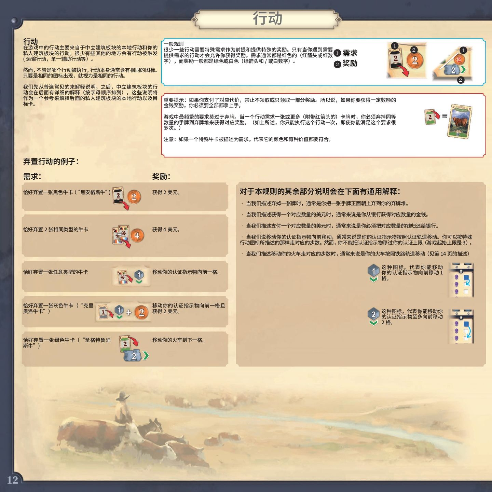
在游戏中的行动主要来自于中立建筑板块的本地行动和你的私人建筑板块的行动。很少有些其他的地方会有行动被触发（运输行动，单一辅助行动等）。然而，不管是哪个行动被执行，行动本身通常含有相同的图标。只要是相同的图标出现，就视为是相同的行动。
一般规则：很少一些行动需要特殊需求作为前提和提供特殊的奖励。只有当你遇到需要提供需求的行动才会允许你获得奖励。需求通常都是红色的（红箭头或红数字），而奖励一般都是绿色或白色（绿箭头和/或白数字）。
重要提示：如果你支付了对应代价，禁止不领取或只领取一部分奖励。所以说，如果你要获得一定数额的金钱奖励，你必须要全部都拿上手。游戏中最频繁的要求莫过于弃牌。当一个行动需求一张或更多（附带红箭头的）卡牌时，你必须弃掉同等数量的手牌到弃牌堆来获得对应奖励。（如上所述，你只能执行这个行动一次，即使你能满足这个要求很多次。）注意：如果一个特殊牛卡被描述为需求，代表它的颜色和育种价值都要符合。
弃置行动的例子（需求 → 奖励）：
对于本规则的其余部分说明会在下面有通用的解释：
当你执行或者行动时，从人才市场选取一个工人板块，支付该工人的雇佣费用并将其放到你玩家版图的对应工人区域中。注意以下规则：
在你支付了雇佣费用后，把工人放在你对应的工人区域，在其类型行的最左边空置格子上放置。注意每位玩家在起始游戏就拥有 3 种类型的工人各一个了（牛仔，建筑师，工程师）这意味着每一行的第一个空置格子早已确定了。
如果你将要放置雇佣工人的格子描述了一个即时行动，你必须二选一立即执行这个行动或放弃这个行动。
举例：在阶段 B，玛丽使用中立建筑板块"A"：第一个雇佣行动，她雇佣了一个工程师，因为她不允许雇佣人才市场同一行的工程师，所以她支付 7 元雇佣上一行的。然后她把这个工程师放置在她工程师那行最左边的空置格子，触发了一个即时行动，她决定使用那个即时行动且弃掉一张"克里奥洛牛"卡来获得 2 美元。第二个雇佣行动是中立建筑板块"A"，她雇佣了一个牛仔支付了 6 美元，因为第二个雇佣行动增加了 2 元的费用，她必须一共支付 8 美元给银行，然后她把牛仔放在牛仔那行最左边的空置格子。非常不幸的是，她没有"加罗韦牛"在手上，然后她必须放弃这个建筑的弃牌行动。
当你执行这个行动时，你能从牛市场获取新的牛卡并正面朝上放在你的私人弃牌堆。然而，你获取的牛卡的数量和类型没有限制。取而代之的是，你在牛仔行拥有的牛仔数量代表了你要支付的钱。
如果你的牛仔行只有一个牛仔工人，你只有一个选择：或者购买一张育种价值为 3 的牛卡；或支付 12 元购买一张"短角牛"卡。
如果你拥有 2 个牛仔，你有更多选择：
这意味着你拥有的牛仔越多，你的选项就越多。要如何分配你的牛仔做这些选项全看你，确保每个你的牛仔在这个行动里都只使用了一次。
在这个行动中，任何你派不上场来购买牛卡的牛仔可以替换为以下方式：从牛市场牌堆抓 2 张牌并正面朝上放置在牛市场。你可以在任何时刻执行此操作。
重要提示：你只能购买牛市场内当前可见的牛卡。你通常可以选择在允许购买数量范围内少购买一些牛卡。你从这个行动获得的任何牛卡必须立即正面朝上放置在你的私人弃牌堆。
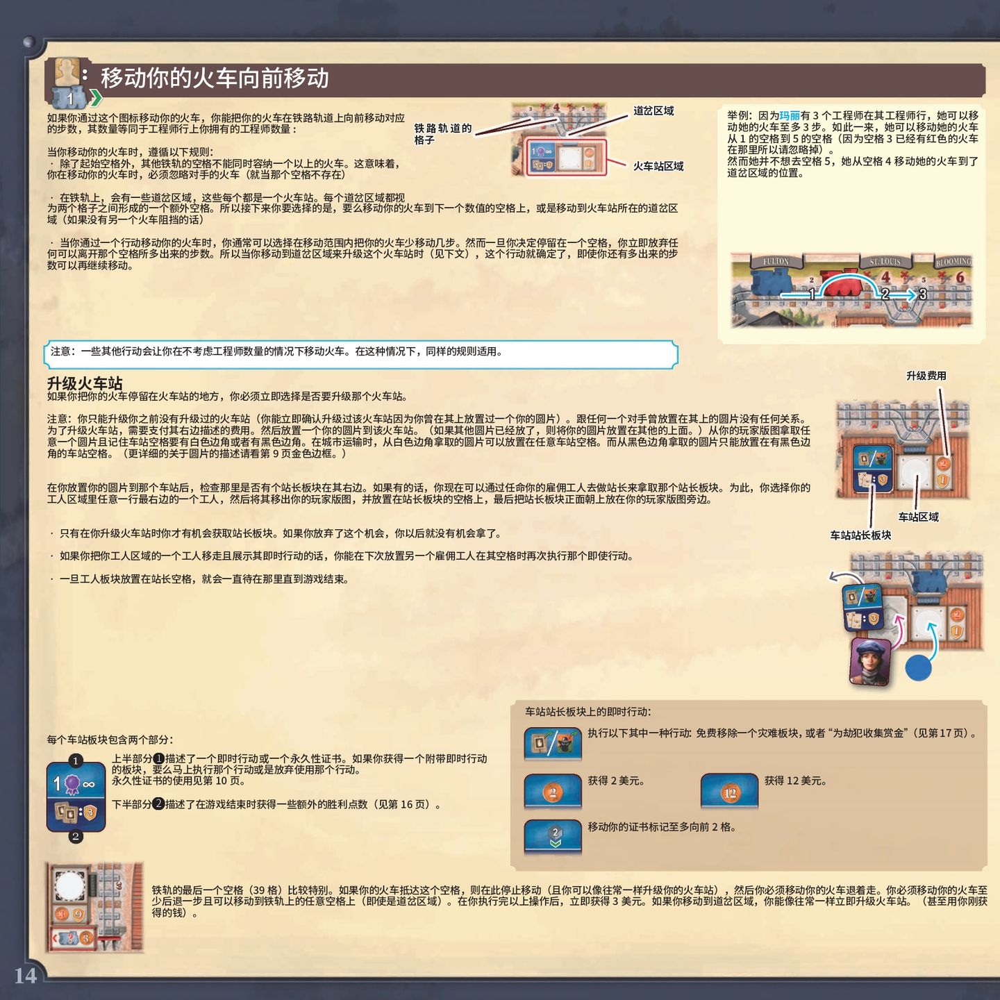
如果你通过这个图标移动你的火车，你能把你的火车在铁路轨道上向前移动对应的步数，其数量等同于工程师行上你拥有的工程师数量。当你移动你的火车时，遵循以下规则：
注意：一些其他行动会让你在不考虑工程师数量的情况下移动火车。在这种情况下，同样的规则适用。
举例：因为玛丽有 3 个工程师在其工程师行，她可以移动她的火车至多 3 步。如此一来，她可以移动她的火车从 1 的空格到 5 的空格（因为空格 3 已经有红色的火车在那里所以请忽略掉）。然而她并不想去空格 5，她从空格 4 移动她的火车到了道岔区域的位置。
如果你把你的火车停留在火车站的地方，你必须立即选择是否要升级那个火车站。
注意：你只能升级你之前没有升级过的火车站（你能立即确认升级过该火车站因为你曾在其上放置过一个圆片）。为了升级火车站，需要支付其右边描述的费用。然后放置一个你的圆片到该火车站。（如果其他圆片已经放在上面，则你的圆片放置在其他圆片的上面。）从你的玩家版图拿取任意的圆片且记住车站空格要有白色边角或者有黑色边角。在城市运输时，从白色边角拿取的圆片可以放置在任意火车站格，而从黑色边角拿取的圆片只能放置在有黑色边角的车站空格。（更详细的关于圆片的描述请看第 9 页金色边框。）
在你放置你的圆片到那个车站后，检查那里是否有个站长板块在其右边。如果有的话，你现在可以通过拿走你的一个雇佣工人来获取那个站长板块。为此，你选择你的工人区域里任意一行最右边的一个工人，然后将其移出你的玩家版图，并放置在站长板块的空格上，最后把站长板块正面朝上放在你的玩家版图旁边。
每个车站板块包含两个部分：上半部分描述了一个即时行动或一个永久性证书。如果你获得一个附带即时行动的板块，要么马上执行那个行动或是放弃使用那个行动。永久性证书的使用见第 10 页。下半部分描述了在游戏结束时获得一些额外的胜利点数（见第 16 页）。
车站站长板块上的即时行动：执行以下其中一种行动：免费移除一个灾难板块，或者"为劫犯收集赏金"（见第 17 页）。获得 2 美元。／获得 12 美元。移动你的证书标记至多向前 2 格。
铁轨的最后一个空格（39 格）比较特别。如果你的火车抵达这个空格，则在此停止移动（且你可以像往常一样升级你的火车站），然后你必须移动你的火车退着走。你必须移动你的火车至少后退一步且可以移动到铁轨上的任意空格上（即使是道岔区域）。在你执行完以上操作后，立即获得 3 美元。如果你移动到道岔区域，你能像往常一样立即升级火车站。（甚至用你刚获得的钱）。
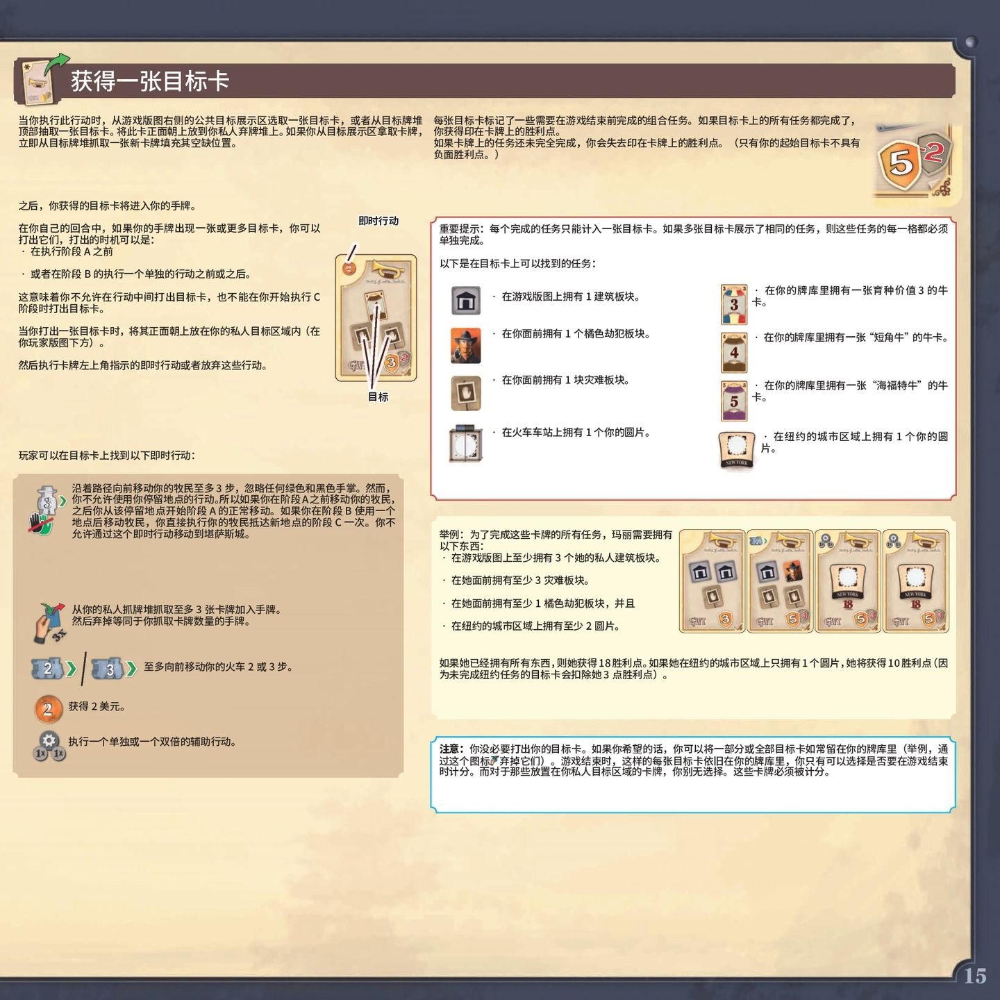
当你执行此行动时，从游戏版图右侧的公共目标展示区选取一张目标卡，或者从目标牌堆顶部抽取一张目标卡。将此卡正面朝上放到你私人弃牌堆上。如果你从目标展示区拿取卡牌，立即从目标牌堆抓取一张新卡牌填充其空缺位置。
之后，你获得的目标卡将进入你的手牌。在你自己的回合中，如果你的手牌出现一张或更多目标卡，你可以打出它们，打出的时机可以是：在执行阶段 A 之前；或者在阶段 B 的执行一个单独的行动之前或之后。这意味着你不允许在行动中间打出目标卡，也不能在你开始执行 C 阶段时打出目标卡。
当你打出一张目标卡时，将其正面朝上放在你的私人目标区域内（在你玩家版图下方）。然后执行卡牌左上角指示的即时行动或者放弃这些行动。
每张目标卡标记了一些需要在游戏结束前完成的组合任务。如果目标卡上的所有任务都完成了，你获得印在卡牌上的胜利点。如果卡牌上的任务还未完全完成，你会失去印在卡牌上的胜利点。（只有你的起始目标卡不具有负面胜利点。）
重要提示：每个完成的任务只能计入一张目标卡。如果多张目标卡展示了相同的任务，则这些任务的每一格都必须单独完成。以下是在目标卡上可以找到的任务：在游戏版图上拥有 1 建筑板块；在你面前拥有 1 个橘色劫犯板块；在你面前拥有 1 块灾难板块；在火车车站上拥有 1 个你的圆片；在你的牌库里拥有一张育种价值 3 的牛卡；在你的牌库里拥有一张"短角牛"的牛卡；在你的牌库里拥有一张"海福特牛"的牛卡；在纽约的城市区域上拥有 1 个你的圆片。
玩家可以在目标卡上找到以下即时行动：
举例：为了完成这些卡牌的所有任务，玛丽需要拥有以下东西：在游戏版图上至少拥有 3 个她的私人建筑板块；在她面前拥有至少 3 灾难板块；在她面前拥有至少 1 橘色劫犯板块，并且在纽约的城市区域上拥有至少 2 圆片。如果她已经拥有所有东西，则她获得 18 胜利点。如果她在纽约的城市区域上只拥有 1 个圆片，她将获得 10 胜利点（因为未完成纽约任务的目标卡会扣除她 3 点胜利点）。
注意：你没必要打出你的目标卡。如果你希望的话，你可以将一部分或全部目标卡如常留在你的牌库里（举例，通过这个图标弃掉它们）。游戏结束时，这样的每张目标卡依旧在你的牌库里，你只有可以选择是否要在游戏结束时计分〔原书如此〕。而对于那些放置在你私人目标区域的卡牌，你别无选择。这些卡牌必须被计分。
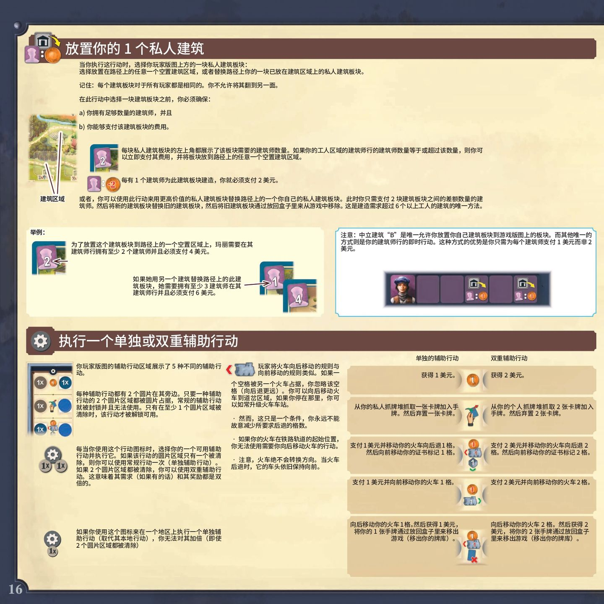
当你执行这行动时，选择你玩家版图上方的一块私人建筑板块：选择放置在路径上的任意一个空置建筑区域，或者替换路径上你的一块已放在建筑区域上的私人建筑板块。记住：每个建筑板块对于所有玩家都是相同的。你不允许将其翻到另一面。在此行动中选择一块建筑板块之前，你必须确保：a) 你拥有足够数量的建筑师，并且 b) 你能够支付该建筑板块的费用。
每块私人建筑板块的左上角都展示了该板块需要的建筑师数量。如果你的工人区域的建筑师行的建筑师数量等于或超过该数量，则你可以立即支付其费用，并将板块放到路径上的任意一个空置建筑区域。每有 1 个建筑师为此建筑板块建造，你就必须支付 2 美元。或者，你可以使用此行动来用更高价值的私人建筑板块替换路径上的一个你自己的私人建筑板块。此时你只需要支付 2 块建筑板块之间的差数量的建筑师。然后将新的建筑板块替换旧的建筑板块，然后将旧建筑板块通过放回盒子里来从游戏中移除。这是建造需求超过 6 个以上工人的建筑的唯一方法。
举例：为了放置这个建筑板块到路径上的一个空置区域上，玛丽需要在其建筑师行拥有至少 2 个建筑师并且必须支付 4 美元。如果她用另一个建筑替换路径上的此建筑板块，她需要拥有至少 3 建筑师在其建筑师行并且必须支付 6 美元。
注意：中立建筑"B"是唯一允许你放置你自己建筑板块到游戏版图上的板块。而其他唯一的方式则是你的建筑师行的即时行动。这种方式的优势是你只需为每个建筑师支付 1 美元而非 2 美元。
你玩家版图的辅助行动区域展示了 5 种不同的辅助行动。每种辅助行动都有 2 个圆片在其旁边。只要一种辅助行动的 2 个圆片区域都被圆片占据，常规的辅助行动就被封锁并且无法使用。只有在至少 1 个圆片区域被清除时，该行动才被解锁可用。
每当你使用这个行动图标时，选择你的一个可用辅助行动并执行它。如果该行动的圆片区域只有一个被清除，则你可以使用常规行动一次（单独辅助行动）。如果 2 个圆片区域都被清除，你可以使用双重辅助行动。这意味着其需求（如果有的话）和其奖励都是双倍的。如果你使用这个图标来在一个地区上执行一个单独辅助行动（取代其本地行动），你无法对其加倍（即使 2 个圆片区域都被清除）。
玩家将火车向后移动的规则与向前移动的规则类似。如果一个空格被另一个火车占据，你忽略该空格（向后退更远）。你可以向后移动火车到道岔区域，如果你停在那里，你可以如常升级火车车站。然而，这只是一个条件，你永远不能少于所要求后退的格数。如果你的火车在铁路轨道的起始位置，你无法使用需要你向后移动火车的行动。火车绝不会转换方向。当火车后退时，它的车头依旧保持向前。
辅助行动表（单独 / 双重）：
| 单独的辅助行动 | 双重辅助行动 |
|---|---|
| 获得 1 美元。 | 获得 2 美元。 |
| 从你的私人抓牌堆抓取一张卡牌加入手牌。然后弃置一张卡牌。 | 从你的个人抓牌堆抓取 2 张卡牌加入手牌。然后弃置 2 张卡牌。 |
| 支付 1 美元并移动你的火车向后退 1 格。然后向前移动你的证书标记 1 格。 | 支付 2 美元并移动你的火车向后退 2 格。然后向前移动你的证书标记 2 格。 |
| 支付 1 美元并向前移动你的火车 1 格。 | 支付 2 美元并向前移动你的火车 2 格。 |
| 向后移动你的火车 1 格。然后获得 1 美元，将你的 1 张手牌通过放回盒子里来移出游戏（移出你的牌库）。 | 向后移动你的火车 2 格。然后获得 2 美元，将你的 2 张手牌通过放回盒子里来移出游戏（移出你的牌库）。 |
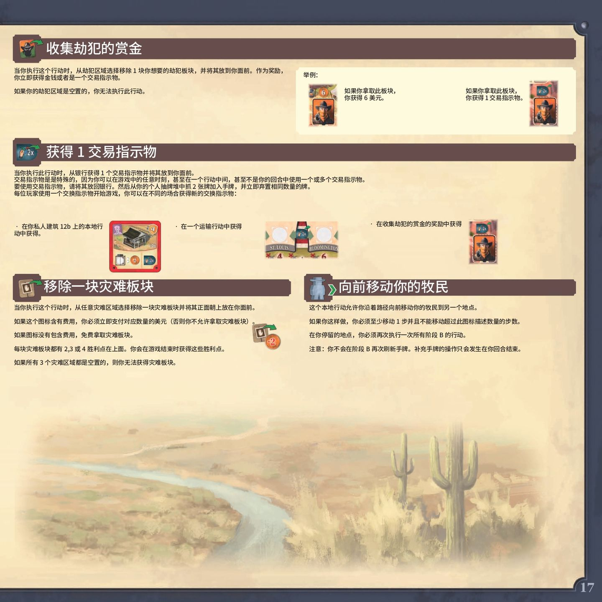
收集劫犯的赏金：当你执行这个行动时，从劫犯区域选择移除 1 块你想要的劫犯板块，并将其放到你面前。作为奖励，你立即获得金钱或者是一个交易指示物。如果你的劫犯区域是空置的，你无法执行此行动。举例：如果你拿取此板块，你获得 6 美元。／如果你拿取此板块，你获得 1 交易指示物。
获得 1 交易指示物 (2x)：当你执行此行动时，从银行获得 1 个交易指示物并将其放到你面前。交易指示物是特殊的，因为你可以在游戏中的任意时刻，甚至在一个行动中间，甚至不是你的回合中使用一个或多个交易指示物。要使用交易指示物，请将其放回银行。然后从你的个人抽牌堆中抓 2 张牌加入手牌，并立即弃置相同数量的牌。每位玩家使用一个交换指示物开始游戏，你可以在不同的场合获得新的交换指示物：在你私人建筑 12b 上的本地行动中获得；在一个运输行动中获得；在收集劫犯的赏金的奖励中获得。
移除一块灾难板块：当你执行这个行动时，从任意灾难区域选择移除一块灾难板块并将其正面朝上放在你面前。如果这个图标含有费用，你必须立即支付对应数量的美元（否则你不允许拿取灾难板块）。如果图标没有包含费用，免费拿取灾难板块。每块灾难板块都有 2,3 或 4 胜利点在上面。你会在游戏结束时获得这些胜利点。如果所有 3 个灾难区域都是空置的，则你无法获得灾难板块。
向前移动你的牧民：这个本地行动允许你沿着路径向前移动你的牧民到另一个地点。如果你这样做，你必须至少移动 1 步且不能移动超过此图标描述数量的步数。在你停留的地点，你必须再次执行一次所有阶段 B 的行动。注意：你不会在阶段 B 再次刷新手牌。补充手牌的操作只会发生在你回合结束。
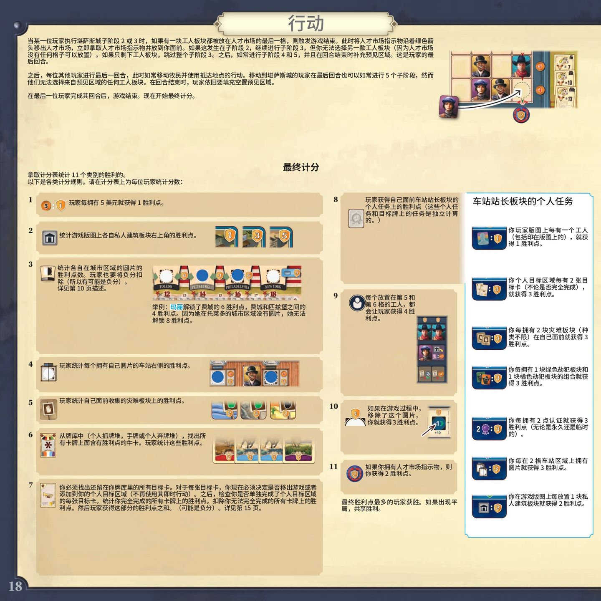
当某一位玩家执行堪萨斯城子阶段 2 或 3 时，如果有一块工人板块都被放在人才市场的最后一格，则触发游戏结束。此时将人才市场指示物沿着绿色箭头移出人才市场，立即拿取人才市场指示物并放到你面前。如果这发生在子阶段 2，继续进行子阶段 3（因为你已经没有任何格子可以放置）。如果只剩下工人板块，跳过整个子阶段 3。之后，如常进行子阶段 4 和 5，并且在回合结束时补充预见区域。这是玩家的最后回合。
之后，每位其他玩家进行最后一回合，此时如常移动牧民并使用抵达地点的行动。移动到堪萨斯城的玩家在最后回合也可以如常进行 5 个子阶段，然而他们无法选择来自预见区域的任何工人板块。在回合结束时，玩家依旧要填充空置预见区域。
在最后一位玩家完成其回合后，游戏结束。现在开始最终计分。
拿取计分表统计 11 个类别的胜利的。以下是各类计分规则，请在计分表上为每位玩家统计分数：
最终胜利点最多的玩家获胜。如果出现平局，共享胜利。
车站站长板块的个人任务：
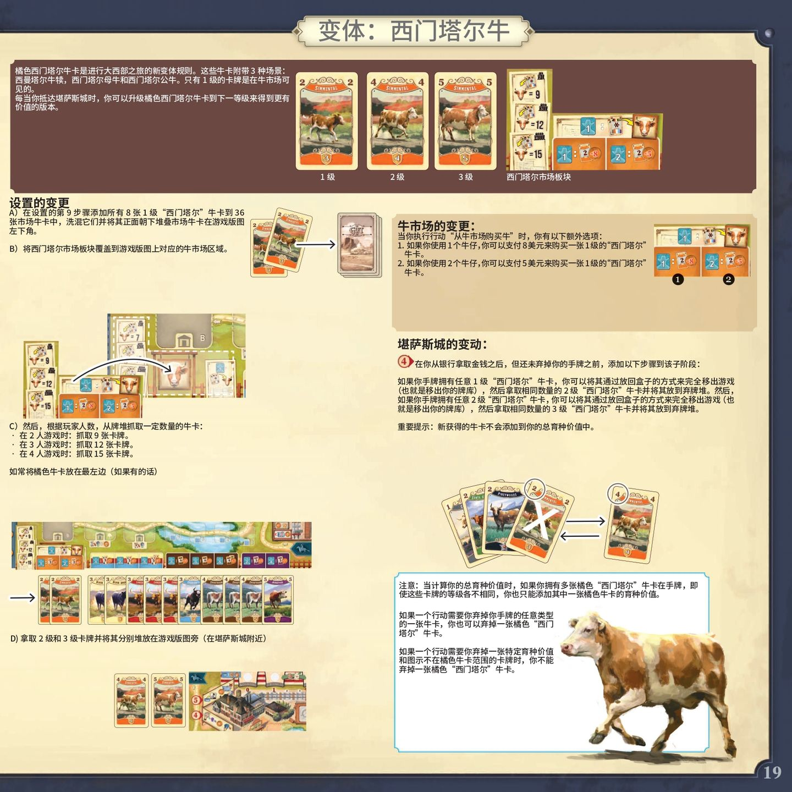
橘色西门塔尔牛卡是进行大西部之旅的新变体规则。这些牛卡附带 3 种场景：西曼塔尔牛犊〔原书如此〕，西门塔尔母牛和西门塔尔公牛。只有 1 级的卡牌是在牛市场可见的。每当你抵达堪萨斯城时，你可以升级橘色西门塔尔牛卡到下一等级来得到更有价值的版本。
设置的变更：
A）在设置的第 9 步骤添加所有 8 张 1 级"西门塔尔"牛卡到 36 张市场牛卡中，洗混它们并将其正面朝下堆叠市场牛卡在游戏版图左下角。
B）将西门塔尔市场板块覆盖到游戏版图上对应的牛市场区域。
C）然后，根据玩家人数，从牌堆抓取一定数量的牛卡：在 2 人游戏时抓取 9 张卡牌；在 3 人游戏时抓取 12 张卡牌；在 4 人游戏时抓取 15 张卡牌。如常将橘色牛卡放在最左边（如果有的话）。
D）拿取 2 级和 3 级卡牌并将其分别堆放在游戏版图旁（在堪萨斯城附近）。
牛市场的变更：当你执行行动"从牛市场购买牛"时，你有以下额外选项：1. 如果你使用 1 个牛仔，你可以支付 8 美元来购买一张 1 级的"西门塔尔"牛卡。2. 如果你使用 2 个牛仔，你可以支付 5 美元来购买一张 1 级的"西门塔尔"牛卡。
堪萨斯城的变动：④在你从银行拿取金钱之后，但还未弃掉你的手牌之前，添加以下步骤到该子阶段：如果你手牌拥有任意 1 级"西门塔尔"牛卡，你可以将其通过放回盒子的方式来完全移出游戏（也就是移出你的牌库），然后拿取相同数量的 2 级"西门塔尔"牛牛卡并将其放到弃牌堆〔"牛牛卡"原书如此〕。然后，如果你手牌拥有任意 2 级"西门塔尔"牛卡，你可以将其通过放回盒子的方式来完全移出游戏（也就是移出你的牌库），然后拿取相同数量的 3 级"西门塔尔"牛卡并将其放到弃牌堆。
重要提示：新获得的牛卡不会增加到你的总育种价值中。
注意：当计算你的总育种价值时，如果你拥有多张橘色"西门塔尔"牛卡在手牌，即使这些卡牌的等级各不相同，你也只能添加其中一张橘色牛卡的育种价值。如果一个行动需要你弃掉你手牌的任意类型的一张牛卡，你也可以弃掉一张橘色"西门塔尔"牛卡。如果一个行动需要你弃掉一张特定育种价值和图示不在橘色牛卡范围的卡牌时，你不能弃掉一张橘色"西门塔尔"牛卡。
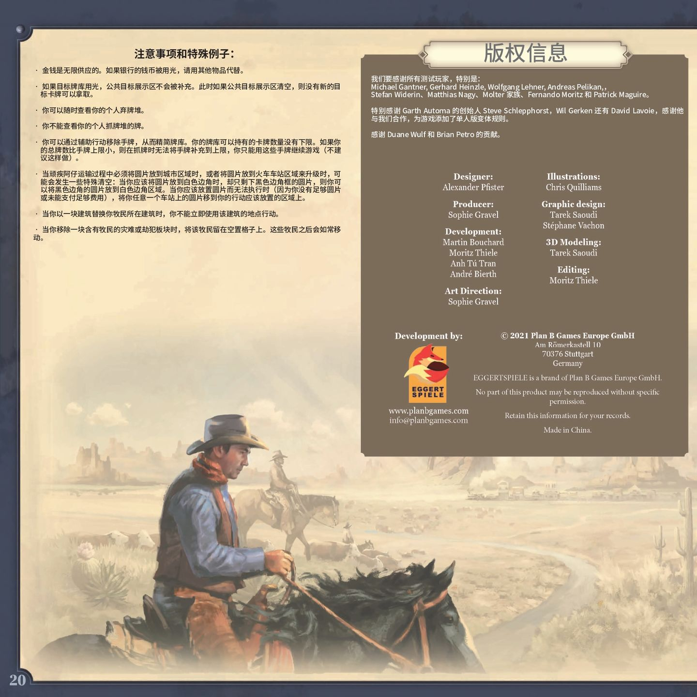
我们要感谢所有测试玩家，特别是：Michael Ganther, Gerhard Heinzle, Wolfgang Lehner, Andreas Pelikan, Stefan Widerin、Matthias Nagy、Molter 家族、Fernando Moritz 和 Patrick Maguire。特别感谢 Garth Automa 的创始人 Steve Schlepphorst，Wil Gerken 还有 David Lavoie，感谢他与我们合作，为游戏添加了单人版变体规则。感谢 Duane Wulf 和 Brian Petro 的贡献。
Designer: Alexander Pfister · Illustrations: Chris Quilliams · Producer: Sophie Gravel · Graphic design: Tarek Saoudi, Stéphane Vachon · Development: Martin Bouchard, Moritz Thiele, Anh Tu Tran, André Bierth · 3D Modeling: Tarek Saoudi · Editing: Moritz Thiele · Art Direction: Sophie Gravel
Development by Egger Spiele（www.planbgames.com）· © 2021 Plan B Games Europe GmbH, Am Romenkastell 10, 70376 Stuttgart, Germany · EGGERTSPIELE is a brand of Plan B Games Europe GmbH · No part of this product may be reproduced without specific permission · Made in China.